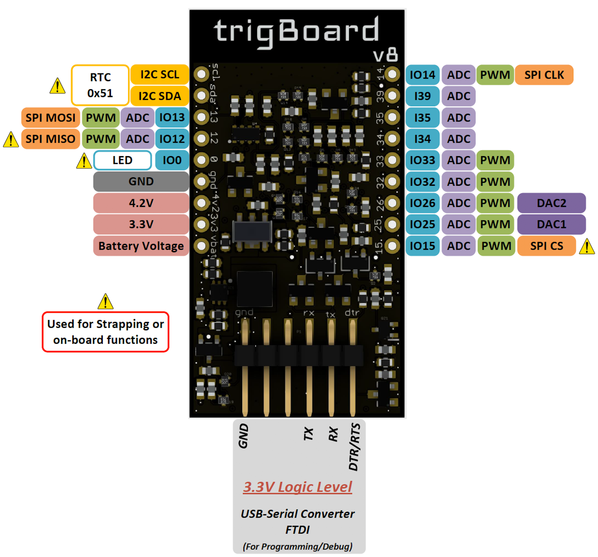

Pinout¶
Reference for the expansion pins:
For expansion - randomnerdtutorials has a great guide on what pins do what. Just be careful with the pins marked above with the hazard symbol. These pins can be used, but just make sure that the mode they’re configured for does not interfere with the normal operation of the board. For example, the GPIO12 cannot be held high during boot up, or the ESP32 will never fully boot up and execute the code. Also, on board is an RTC using the I2C port, so that same port can be used for other I2C devices, just as long as there’s no address conflict.
trigBoard Pin Usage At the core of the trigBoard, it’s just a tricked out ESP32 development board with some incredible low power capability. Power is actually removed from the ESP32 in order to accomplish the single digit uA standby current. This is important to note since the 3.3V rail is controlled by the wake circuitry. If needed, the base firmware can be completely overwritten by whatever custom application that fits the needs of the user. These are the pins used by the wake circuitry on the trigBoard, which can be used by the user for the custom application:
Warning
- Logic Level is 3.3V on expansion pins - make sure to properly level shift if external device is powered by VBAT.
- 4V2 pin is always powered at 4.2V even if battery voltage is lower - this can be used to power devices if needed
- 3V3 pin is the switched 3.3V power to the board when triggered. Useful for polling sensors on wake event (RTC/or Input)
{kind=link}